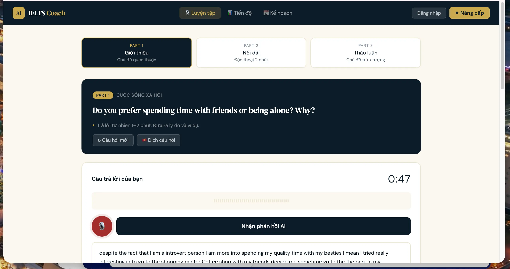

For IELTS Teachers and Students
Students don't need another lesson.
They need speaking practice between lessons.
Many IELTS students speak English for only one or two hours each week — usually during class and nowhere else. IELTS-Coach helps students maintain structured speaking practice outside lessons, while giving teachers greater visibility into who is practicing and how they're progressing.
The Challenge
The Challenge Every IELTS Teacher Knows
Students promise to practice. They mean it. Then the week passes, and they arrive to the next lesson having spoken very little English at all.
Some use ChatGPT. Some watch YouTube videos. Some review sample answers without speaking a single sentence aloud.
The gap between lessons is where improvement stalls — not because students lack motivation, but because independent speaking practice is genuinely difficult to sustain without structure and feedback.
Progress Over Perfection
Many Students Don't Need Better Grammar. They Need Confidence.
Many students spend years learning how to pass English exams, but surprisingly little time actually speaking English. As a result, even learners with solid grammar and vocabulary may freeze when asked to express their own ideas spontaneously.
Teachers working with Band 4.5–5.5 students often describe the same pattern: the student freezes. Not from grammar problems — from not knowing what to say, or being afraid to say it wrong.
Speaking for 45 seconds without stopping
Using one new phrase correctly
Producing a clearer, more organized answer
Coming back to practice again tomorrow
These are real wins. They are what progress looks like at the early stages — and they matter more than a flawless answer delivered once every two weeks in class.
Confidence often develops long before fluency. Practice is what makes both possible.
Guided Speaking Practice
Structure When the Teacher Isn't There
Students often don't practice because they don't know what to do. IELTS-Coach addresses that directly.
Speaking Prompts
Structured Part 1, 2, and 3 questions — the same format students face in the exam — so practice is always purposeful.
Guiding Questions
When a student freezes, guiding questions help them get started. Not shortcuts — scaffolding that builds thinking habits over time.
Vocabulary Support
Topic-relevant vocabulary available during practice — reducing the anxiety of not knowing a word, and helping students build their range gradually.
Feedback on Every Response
Each response receives specific feedback in English or Vietnamese. Not a score alone — observations on what worked and what to focus on next.

For Teachers
Visibility Without More Marking
Teachers don't necessarily need another grading system. They simply need answers to three questions:
The teacher dashboard gives a clear view of practice activity across a class — without adding to an already heavy marking load.
More practice. Less chasing. A clearer picture of who is progressing and who needs a nudge.
Great speaking habits are not built during a single lesson.
They are built during the other 166 hours of the week.
One weekly lesson is not enough to build the speaking fluency IELTS requires. The students who improve most are those who practice consistently outside class — not perfectly, but regularly.
IELTS-Coach is designed for those hours: structured, low-pressure, and available whenever a student is ready to practice.